Installation und Einrichtung
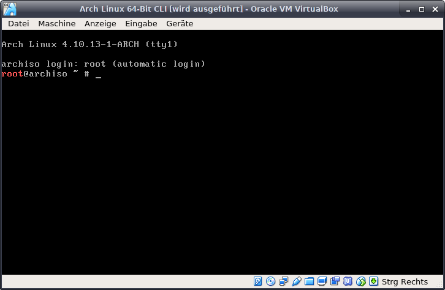
Nach der Installation sieht man nur die Kommandozeile.
Als erstes Kommando sollte man hier die Tastaturbelegung ändern.
Damit wird die Tastaturbelegung von Englisch auf Deutsch geändert.
In der Englischen Belegung sind die Buchstaben "y" und "z" vertauscht.
Der Bindestrick "-" befindet sich auf der Fragezeichen "?" Taste.
Danach wird die Festplatte partitioniert.
Im Regelfall lautet der Befehl dafür:
Sollte dies nicht der Fall sein, kann man mit dem Befehl
das Zielmedium herausfinden, und den vorherigen Befehl anpassen.
Zum Beispiel könnte der Befehl auch:
lauten.
Als erstes Kommando sollte man hier die Tastaturbelegung ändern.
loadkeys de-latin1
Damit wird die Tastaturbelegung von Englisch auf Deutsch geändert.
In der Englischen Belegung sind die Buchstaben "y" und "z" vertauscht.
Der Bindestrick "-" befindet sich auf der Fragezeichen "?" Taste.
Danach wird die Festplatte partitioniert.
Im Regelfall lautet der Befehl dafür:
fdisk /dev/sda
Sollte dies nicht der Fall sein, kann man mit dem Befehl
fdisk -l
das Zielmedium herausfinden, und den vorherigen Befehl anpassen.
Zum Beispiel könnte der Befehl auch:
fdisk /dev/sdb
oder
fdisk /dev/sdc
lauten.
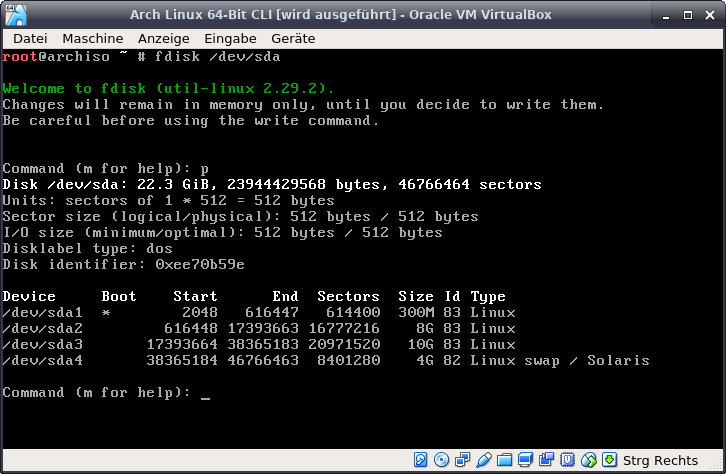
Das Tool "fdisk" ist eigentlich ziemlich selbsterklärend
Es wird hauptsächlich mit ein paar Buchstaben gesteuert.
(In der Regel reichen primäre Partitionen)
Danach wird nach dem Start- und Endsektoren gefragt. Den Startsektor kann man mit "Enter" weiterklicken (Standartwert wird benutzt).
Mit dem Endsektor gibt man die Größe der Partition an. Z. B. :
Je nach Einsatzzweck und/oder Vorlieben kann der Partitionsaufbau variieren.
Eine Standardkonfiguration der Festplatte ist folgende:
100-300 Megabyte: /boot - Partition
8-12 Gigabyte: /root - Partition
4-8 Gigabyte: /swap - Partition
Den Rest der Festplatte für die /home - Partition
Danach noch mit:
Und zu guter letzt mit:
Jetzt befindet man sich wieder in der Kommandozeile:
Nun muss man nur noch das Filesystem der Partitionen anlegen:
Wobei mit "NAME" der Name der Partition gewählt werden kann.
Z. B. boot, root und home. "X" = PartitionsNr. also sda1, sda2 usw.
Den swap anlegen mit:
Auch hier gilt: "NAME" = wählbarer Partitionsname. "X" = Partitions Nr.
Es wird hauptsächlich mit ein paar Buchstaben gesteuert.
n = eine neue Partition anlegen
p bzw. e = primäre bzw. erweiterte Partition
(In der Regel reichen primäre Partitionen)
Danach wird nach dem Start- und Endsektoren gefragt. Den Startsektor kann man mit "Enter" weiterklicken (Standartwert wird benutzt).
Mit dem Endsektor gibt man die Größe der Partition an. Z. B. :
+300M = 300 Megabyte
+20G = 20 Gigabyte
Je nach Einsatzzweck und/oder Vorlieben kann der Partitionsaufbau variieren.
Eine Standardkonfiguration der Festplatte ist folgende:
100-300 Megabyte: /boot - Partition
8-12 Gigabyte: /root - Partition
4-8 Gigabyte: /swap - Partition
Den Rest der Festplatte für die /home - Partition
Danach noch mit:
a = Das Bootflag von der /boot - Partition setzen
t = Die /swap Partition auf Ihren Typ setzen
Und zu guter letzt mit:
w = Partition auf Festplatte schreiben
Jetzt befindet man sich wieder in der Kommandozeile:
Nun muss man nur noch das Filesystem der Partitionen anlegen:
mkfs.ext4 -L NAME /dev/sdaX
Wobei mit "NAME" der Name der Partition gewählt werden kann.
Z. B. boot, root und home. "X" = PartitionsNr. also sda1, sda2 usw.
Den swap anlegen mit:
mkswap -L NAME /dev/sdaX
Auch hier gilt: "NAME" = wählbarer Partitionsname. "X" = Partitions Nr.
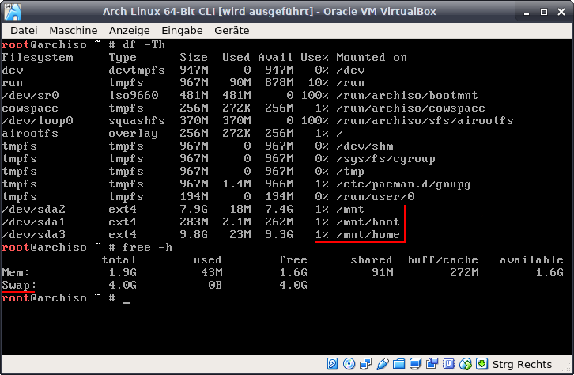
Als nächstes müssen die Partitionen gemountet werden.
Dies erledigt man mit dem Befehl:
"X" = Partitions Nr. der /root Partition. In diesem Beispiel eben /dev/sda2
Verzeichnisse für nachfolgende Partition anlegen mit:
Restlichen Partitionen in die eben angelegten Verzeichnisse einbinden:
Auch hier: "X" = Partitions Nummer. Im Beispiel ist das:
/dev/sda1 = /boot
/dev/sda3 = /home
Den Swap (im Beispiel /dev/sda4) einschalten mit:
Nachdem alles gemounted ist kann man überprüfen mit:
Dies erledigt man mit dem Befehl:
mount /dev/sdX /mnt
"X" = Partitions Nr. der /root Partition. In diesem Beispiel eben /dev/sda2
Verzeichnisse für nachfolgende Partition anlegen mit:
mkdir /mnt/boot
und
mkdir /mnt/home
Restlichen Partitionen in die eben angelegten Verzeichnisse einbinden:
mount /dev/sdaX /mnt/boot
mount /dev/sdaX /mnt/home
Auch hier: "X" = Partitions Nummer. Im Beispiel ist das:
/dev/sda1 = /boot
/dev/sda3 = /home
Den Swap (im Beispiel /dev/sda4) einschalten mit:
swapon /dev/sda4
Nachdem alles gemounted ist kann man überprüfen mit:
df -Th
und
free -h
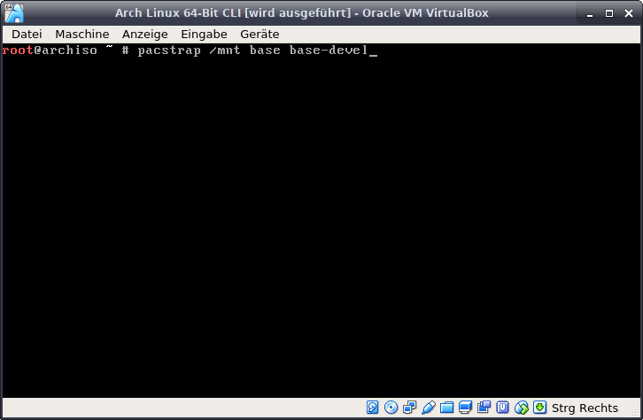
Dies ist nun die eigentliche Installation von Arch Linux.
Im Gegensatz zu den "Windows" der Linux Distributionen Ubuntu und OpenSUSE installiert Arch Linux nicht Unmengen an Software mit,
welche sowieso nur ca. 10% der Anwender benutzen und das System
unnötig aufblähen und dadurch den ganzen Rechner langsam macht.
Arch Linux installiert ein System, das gerade so läuft.
Man erhält eine Kommandozeile und ein paar nützliche Tools.
Das Paket "base" ist das Grundsystem.
Das Paket "base-devel" wird benötigt um nachträglich Software zu installieren.
Für Notebooks (oder PCs welche über WLAN verbunden sind) empfiehlt sich noch das Packet "wpa_supplicant" mitzuinstallieren, damit man nach dem Neustart das WLAN weiter benutzen kann.
Für Rechner mit Intel Prozessor empfiehlt sich noch das Packet intel-ucode.
Dieses aktualisiert die Firmware der CPU bei Intel Prozessoren.
Aktualisierungen für AMD Prozessoren sind bereits enthalten.
Im Beispiel ist nur die Grundinstallation.
Folgender Befehl würde die Basis- und empfohlenen Packete installieren.
Das "/mnt" gibt das Verzeichnis an wohin die Packete installiert werden.
Also die Partition /dev/sda2 - welche vorher nach /mnt gemounted wurde.
Im Gegensatz zu den "Windows" der Linux Distributionen Ubuntu und OpenSUSE installiert Arch Linux nicht Unmengen an Software mit,
welche sowieso nur ca. 10% der Anwender benutzen und das System
unnötig aufblähen und dadurch den ganzen Rechner langsam macht.
Arch Linux installiert ein System, das gerade so läuft.
Man erhält eine Kommandozeile und ein paar nützliche Tools.
Das Paket "base" ist das Grundsystem.
Das Paket "base-devel" wird benötigt um nachträglich Software zu installieren.
Für Notebooks (oder PCs welche über WLAN verbunden sind) empfiehlt sich noch das Packet "wpa_supplicant" mitzuinstallieren, damit man nach dem Neustart das WLAN weiter benutzen kann.
Für Rechner mit Intel Prozessor empfiehlt sich noch das Packet intel-ucode.
Dieses aktualisiert die Firmware der CPU bei Intel Prozessoren.
Aktualisierungen für AMD Prozessoren sind bereits enthalten.
Im Beispiel ist nur die Grundinstallation.
Folgender Befehl würde die Basis- und empfohlenen Packete installieren.
pacstrap /mnt base base-devel wpa_supplicant intel-ucode
Das "/mnt" gibt das Verzeichnis an wohin die Packete installiert werden.
Also die Partition /dev/sda2 - welche vorher nach /mnt gemounted wurde.
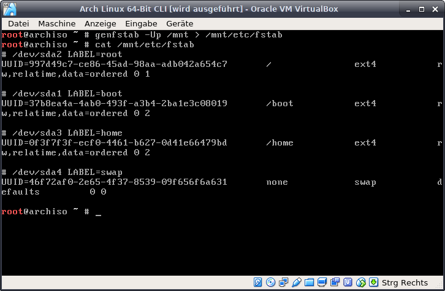
Nachdem das System installiert ist muss die File System Tabelle erstellt werden.
Die wird mit dem Befehl:
erledigt.
Up: U = UUID der Partitionen verwenden / p = nur eigene Partitionen verwenden
/mnt: Verzeichnis von welchem die Tabelle erstellt werden soll
> /mnt/etc/fstab: Verzeichnis wohin die Tabelle erstellt werden soll
Die File System Tabelle wird verwendet um nach dem Starten des Kernels
die Partitionen in die richtigen Verzeichnisse einzubinden.
UUIDs bzw. Labels zu verwenden ist optionel, da man auch nur den Gerätepfad
wie z. B. "/dev/sdX" verwenden kann.
Aber bei evtl. Aufrüstung des PCs durch eine Festplatte oder booten mit angeschlossenem USB-Stick können sich die Gerätepfade ändern und das System wird nicht starten, da es die /root Partition nicht findet.
Die File System Tabella kann man kontrollieren mit:
Im Beispiel ist eine FS-Tabelle zu sehen.
Die wird mit dem Befehl:
genfstab -Up /mnt > /mnt/etc/fstab
erledigt.
Up: U = UUID der Partitionen verwenden / p = nur eigene Partitionen verwenden
/mnt: Verzeichnis von welchem die Tabelle erstellt werden soll
> /mnt/etc/fstab: Verzeichnis wohin die Tabelle erstellt werden soll
Die File System Tabelle wird verwendet um nach dem Starten des Kernels
die Partitionen in die richtigen Verzeichnisse einzubinden.
UUIDs bzw. Labels zu verwenden ist optionel, da man auch nur den Gerätepfad
wie z. B. "/dev/sdX" verwenden kann.
Aber bei evtl. Aufrüstung des PCs durch eine Festplatte oder booten mit angeschlossenem USB-Stick können sich die Gerätepfade ändern und das System wird nicht starten, da es die /root Partition nicht findet.
Die File System Tabella kann man kontrollieren mit:
cat /mnt/etc/fstab
Im Beispiel ist eine FS-Tabelle zu sehen.
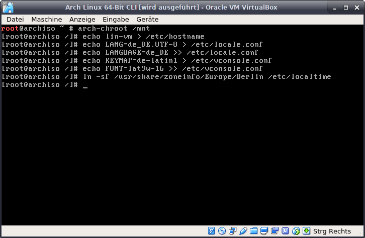
Da nun das System benutzbar ist kann man es konfigurieren. Mit
wechselt man in das eben installierte System und arbeitet nun so,
als währe der Rechner direkt mit diesem System hochgefahren.
Nun folgt eine Reihe an Befehlen um die Kommanzeile zu konfigurieren:
Setzt den frei wählbaren Hostname des Rechners. Im Beispiel "lin-vm".
Setzt die Sprache auf deutsch. WICHTIG beim zweiten Befehl!!!
Zwei Pfeile nach rechts: ">>" da sonst die Datei überschrieben statt ergänzt wird.
Tastaturbelegund und Schrift auf deutsch einstellen.
Symbolischen Link für die Systemzeit erstellen.
arch-chroot /mnt
wechselt man in das eben installierte System und arbeitet nun so,
als währe der Rechner direkt mit diesem System hochgefahren.
Nun folgt eine Reihe an Befehlen um die Kommanzeile zu konfigurieren:
echo lin-vm > /etc/hostname
Setzt den frei wählbaren Hostname des Rechners. Im Beispiel "lin-vm".
echo LANG=de_DE.UTF-8 > /etc/locale.conf
echo LANGUAGE=de_DE >> /etc/locale.conf
Setzt die Sprache auf deutsch. WICHTIG beim zweiten Befehl!!!
Zwei Pfeile nach rechts: ">>" da sonst die Datei überschrieben statt ergänzt wird.
echo KEYMAP=de-latin1 > /etc/vconsole.conf
echo FONT=lat9w-16 >> /etc/vconsole.conf
Tastaturbelegund und Schrift auf deutsch einstellen.
ln -sf /usr/share/zoneinfo/Europe/Berlin /etc/localtime
Symbolischen Link für die Systemzeit erstellen.
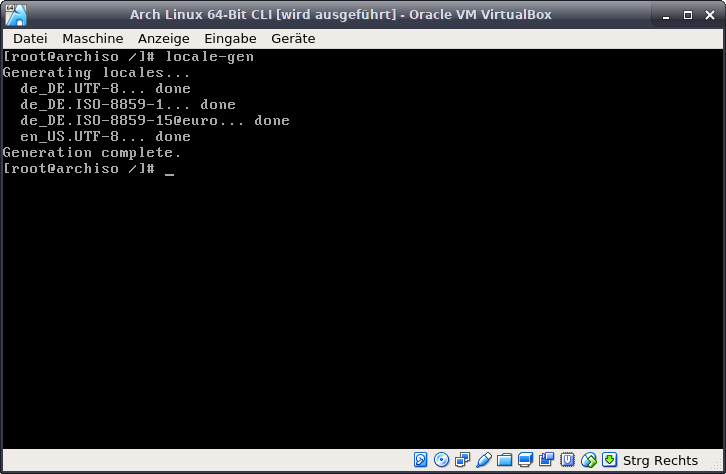
Die lokale Textsprache einstellen. Mit
öffnet man die Datei "/etc/locale.gen" im Texteditor "nano".
Die vier Zeilen:
#de_DE.UTF-8
#de_DE.ISO-8859-1
#de_DE.ISO-8859-15@euro
#en_US.UTF-8
suchen und das Route Zeichen davor entfernen.
Die englische Sprache ist wichtig falls Drittanbieter-Software
Fehlermeldungen erzeugt welche auf englisch sind.
Sie würden ohne die englische Sprache nicht bzw. falsch angezeigt werden.
Anschließend mit dem Befehl
Die eben eingegliederten Sprachen erzeugen.
nano /etc/locale.gen
öffnet man die Datei "/etc/locale.gen" im Texteditor "nano".
Die vier Zeilen:
#de_DE.UTF-8
#de_DE.ISO-8859-1
#de_DE.ISO-8859-15@euro
#en_US.UTF-8
suchen und das Route Zeichen davor entfernen.
Die englische Sprache ist wichtig falls Drittanbieter-Software
Fehlermeldungen erzeugt welche auf englisch sind.
Sie würden ohne die englische Sprache nicht bzw. falsch angezeigt werden.
Anschließend mit dem Befehl
locale-gen
Die eben eingegliederten Sprachen erzeugen.
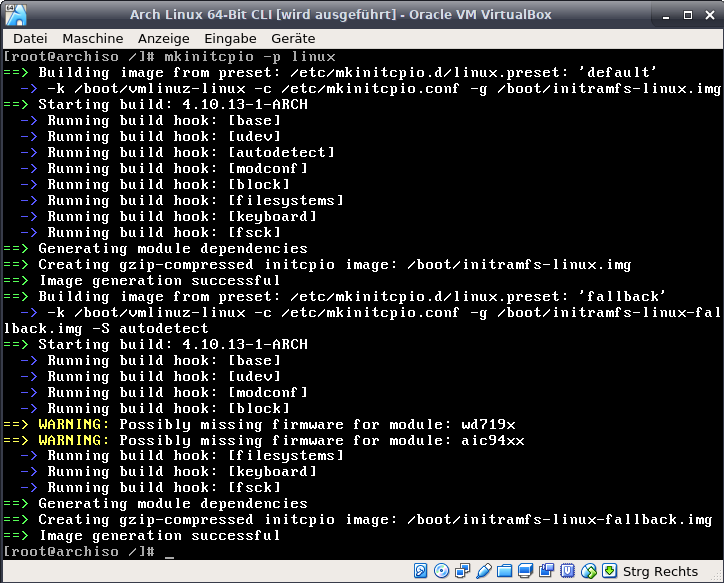
Damit währen die Hauptstellen im System konfiguriert.
Nun wird mit
der eigentliche Linux Kernel erzeugt.
Zwar übernimmt das Skript "pacstrap" diesen Schritt,
aber falls man Modifizierungen am Kernel vornimmt währe dieser
Schritt notwendig, da die Modifizierungen sonst nicht aktiv währen.
Sollte man nachträglich etwas am Kernel verstellen
ist dieser Befehl ebenfalls erforderlich.
Der Parameter: "-p" liest alles in der Datei "/etc/mkinitcpio.d"
an welchem man modifizieren kann und generiert daraus den Kernel.
Ich lasse an dieser Stelle den Linux Kernel neu erzeugen.
Es ist zwar nicht zwingend notwendig, schadet aber auch nicht.
Die Zeilen welche mit einem gelben "==> WARNING:" beginnen,
sind getrost zu vernachlässigen.
Nun wird mit
mkinitcpio -p linux
der eigentliche Linux Kernel erzeugt.
Zwar übernimmt das Skript "pacstrap" diesen Schritt,
aber falls man Modifizierungen am Kernel vornimmt währe dieser
Schritt notwendig, da die Modifizierungen sonst nicht aktiv währen.
Sollte man nachträglich etwas am Kernel verstellen
ist dieser Befehl ebenfalls erforderlich.
Der Parameter: "-p" liest alles in der Datei "/etc/mkinitcpio.d"
an welchem man modifizieren kann und generiert daraus den Kernel.
Ich lasse an dieser Stelle den Linux Kernel neu erzeugen.
Es ist zwar nicht zwingend notwendig, schadet aber auch nicht.
Die Zeilen welche mit einem gelben "==> WARNING:" beginnen,
sind getrost zu vernachlässigen.
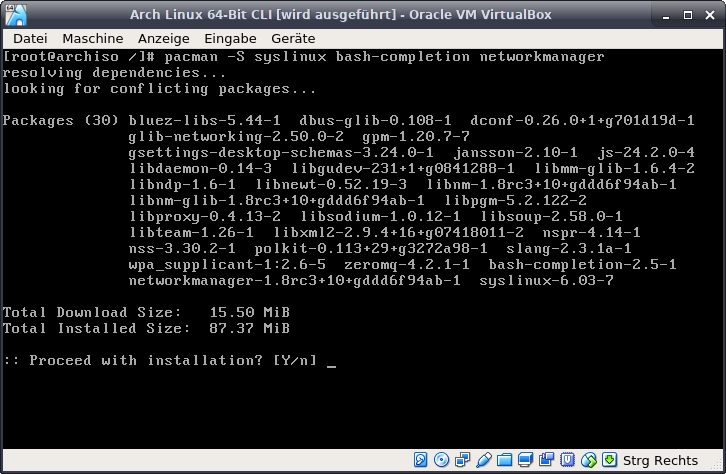
Damit der Rechner das Betriebssystem bzw. den eben erstellten Kernel
starten kann, wird ein Bootloader benötigt. Im Beispiel ist das Syslinux.
Zusätzlich zu dem Bootloader installiere ich noch zwei nützliche Tools.
bash-completion: Mit der Tab-Taste Befehle und Pfade vervollständigen.
networkmanager: Automatisch eine Netzwerkverbindung herstellen.
Nach der Installation der Tools noch mit
die automatische Netzwerkverbindungsherstellung aktivieren.
Anschließend muss der Bootloader "Syslinux" noch konfiguriert werden...
Mit dem Befehl
wird die UUID der /root - Partition ans Ende syslinux.cfg geschrieben.
WICHTIG: zwei Pfeile nach rechts: ">>" da sonst die Datei überschrieben wird!!!
Anschließend mit
die Konfigurationsdatei des Bootloaders mit dem Texteditor "nano" öffnen.
starten kann, wird ein Bootloader benötigt. Im Beispiel ist das Syslinux.
Zusätzlich zu dem Bootloader installiere ich noch zwei nützliche Tools.
bash-completion: Mit der Tab-Taste Befehle und Pfade vervollständigen.
networkmanager: Automatisch eine Netzwerkverbindung herstellen.
Nach der Installation der Tools noch mit
systemctl enable NetworkManager
die automatische Netzwerkverbindungsherstellung aktivieren.
Anschließend muss der Bootloader "Syslinux" noch konfiguriert werden...
Mit dem Befehl
lsblk /dev/sdX >> /boot/syslinux/syslinux.cfg
wird die UUID der /root - Partition ans Ende syslinux.cfg geschrieben.
WICHTIG: zwei Pfeile nach rechts: ">>" da sonst die Datei überschrieben wird!!!
Anschließend mit
nano /boot/syslinux/syslinux.cfg
die Konfigurationsdatei des Bootloaders mit dem Texteditor "nano" öffnen.
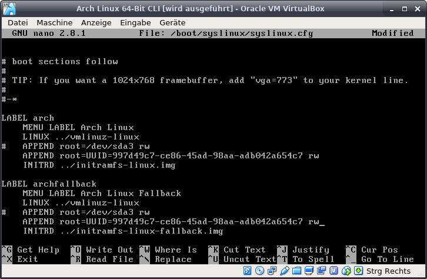
Am Ende der Datei steht eine Zeile welche die UUID der /root Partition enthält.
Alles bis auf die UUID der Zeile löschen und die UUID kopieren.
Diese muss nun an die Zeile: "APPEND root=" angehängt werden.
Es würde zwar auch mit: "APPEND root=/dev/sdX rw" funktionieren,
aber damit gäbe es wieder die vorher angesprochene Aufrüstungs-Problematik.
Wichtig ist das "rw" am Ende der Zeile.
Im Beispiel ist eine Zeile wie sie sein sollte. UUID ist immer anders.
Die obere Zeile mit dem Routezeichen "#" davor kann gelöscht werden.
Nachdem die Datei gespeichert wurde und man wieder
auf der Kommandozeile ist, mit dem Befehl
den Konfigurierten Bootloader in den MBR der Festplatte schreiben.
Abschließend den Befehl
eingeben und zweimal ein neues Kennwort eingeben.
Dies ist das Kennwort für den "root" Benutzer.
Den Rechner neustarten:
Alles bis auf die UUID der Zeile löschen und die UUID kopieren.
Diese muss nun an die Zeile: "APPEND root=" angehängt werden.
Es würde zwar auch mit: "APPEND root=/dev/sdX rw" funktionieren,
aber damit gäbe es wieder die vorher angesprochene Aufrüstungs-Problematik.
Wichtig ist das "rw" am Ende der Zeile.
Im Beispiel ist eine Zeile wie sie sein sollte. UUID ist immer anders.
Die obere Zeile mit dem Routezeichen "#" davor kann gelöscht werden.
Nachdem die Datei gespeichert wurde und man wieder
auf der Kommandozeile ist, mit dem Befehl
syslinux-install_update -iam
den Konfigurierten Bootloader in den MBR der Festplatte schreiben.
Abschließend den Befehl
passwd
eingeben und zweimal ein neues Kennwort eingeben.
Dies ist das Kennwort für den "root" Benutzer.
Den Rechner neustarten:
reboot

Nach dem der Rechner hochgefahren ist sollte das Anmeldefenster erscheinen.
als Nutzer: root eingeben und danach das vorher gewählte Kennwort.
Somit ist das System istalliert und vollständig benutzbar.
Ein absolutes Minimalsystem, welches um die 50 MB Arbeitsspeicher verbraucht,
und somit auch auch alten bzw. Leistungsschwachen Rechnern läuft.
Die Installation bis hier her ist mit etwas Übung innerhalb 10 Minuter erledigt.
Natürlich ist auf dem System noch keine Software installiert.
Aber die Software die man braucht installiert man einfach nach.
Auch kann man das System im Moment nur mit der Tastaturbedienen.
Aber auch eine Graphische Oberflächt kann einfach nachinstalliert werden.
Ab hier entscheidet sich ob man das System minimal, schlank und schnell
halten will, oder mit bunten Effekten und großen Programmen aufbläht.
Aber egal was man macht, selbst ein mit Unmengen an Software überflutetes
Arch Linux ist und bleibt immer schneller als ein Windows oder Ubuntu...
Programme werden installiert mit dem Befehl:
Ich habe im Beispiel das Programm "screenfetch" installiert
Programme startet man in dem man einfach den Name des Programms eingibt.
"screenfetch" gibt einfach nur folgende Schrift wie im Beispiel aus.
als Nutzer: root eingeben und danach das vorher gewählte Kennwort.
Somit ist das System istalliert und vollständig benutzbar.
Ein absolutes Minimalsystem, welches um die 50 MB Arbeitsspeicher verbraucht,
und somit auch auch alten bzw. Leistungsschwachen Rechnern läuft.
Die Installation bis hier her ist mit etwas Übung innerhalb 10 Minuter erledigt.
Natürlich ist auf dem System noch keine Software installiert.
Aber die Software die man braucht installiert man einfach nach.
Auch kann man das System im Moment nur mit der Tastaturbedienen.
Aber auch eine Graphische Oberflächt kann einfach nachinstalliert werden.
Ab hier entscheidet sich ob man das System minimal, schlank und schnell
halten will, oder mit bunten Effekten und großen Programmen aufbläht.
Aber egal was man macht, selbst ein mit Unmengen an Software überflutetes
Arch Linux ist und bleibt immer schneller als ein Windows oder Ubuntu...
Programme werden installiert mit dem Befehl:
pacman -S name_des_programms
Ich habe im Beispiel das Programm "screenfetch" installiert
Programme startet man in dem man einfach den Name des Programms eingibt.
"screenfetch" gibt einfach nur folgende Schrift wie im Beispiel aus.

Da man generell vermeiden sollte ständig als root Benutzer zu arbeiten
legt man jetzt einen normalen Benutzer an.
USERNAME = frei wählbarer Benutzername
"-m" = ein home Verzeichnis für den Benutzer erstellen
"-g users" = die Hauptgruppe in der sich der User befindet
"-s /bin/bash" = gibt die Shell an welche der Benutzer verwendet (hier bash)
"-G ..." = gibt zusätzliche Gruppen an in welche der Benutzer eingetragen wird
Zusätzliche Gruppen sind aber nicht zwingend notwendig.
Nachdem der Benutzer angelegt worden ist mit
dem eben angelegten Benutzer ein Passwort vergeben.
Danach werden mit
ein paar nützliche Dienste installiert.
acpid = Energieverwaltung
ntp = automatische Zeitsynchronisation
dbus = interne Kommunikationsverwaltung
avahi = Netzwerksyncronisation
cups = Druckerverwaltung
cronie = Cronjobs / Geplante Ausführung von Programmen
Sollte es verschiedene Repositoriums zur Auswah geben (wie im Beispiel)
kann man standartmäßig die default Einstellung gewählt werden.
legt man jetzt einen normalen Benutzer an.
useradd -m -g users -s /bin/bash USERNAME
USERNAME = frei wählbarer Benutzername
"-m" = ein home Verzeichnis für den Benutzer erstellen
"-g users" = die Hauptgruppe in der sich der User befindet
"-s /bin/bash" = gibt die Shell an welche der Benutzer verwendet (hier bash)
"-G ..." = gibt zusätzliche Gruppen an in welche der Benutzer eingetragen wird
Zusätzliche Gruppen sind aber nicht zwingend notwendig.
Nachdem der Benutzer angelegt worden ist mit
passwd USERNAME
dem eben angelegten Benutzer ein Passwort vergeben.
Danach werden mit
pacman -S acpid ntp dbus avahi cups cronie
ein paar nützliche Dienste installiert.
acpid = Energieverwaltung
ntp = automatische Zeitsynchronisation
dbus = interne Kommunikationsverwaltung
avahi = Netzwerksyncronisation
cups = Druckerverwaltung
cronie = Cronjobs / Geplante Ausführung von Programmen
Sollte es verschiedene Repositoriums zur Auswah geben (wie im Beispiel)
kann man standartmäßig die default Einstellung gewählt werden.
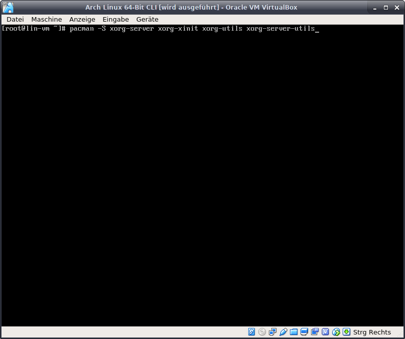
Als nächstes wird der Xorg-Server installiert.
Der Xorg-Server stellt die nötigen Funktionen für eine
Graphische Desktop Umgebung bereit.
Der Befehl:
installiert alle benötigten pakete.
Im nächsten Schritt werden die Treiber für die Grafikkarte
und falls vorhanden andere Geräte installiert.
Der Xorg-Server stellt die nötigen Funktionen für eine
Graphische Desktop Umgebung bereit.
Der Befehl:
pacman -S xorg-server xorg-xinit
xorg-utils xorg-server-utils
xorg-utils xorg-server-utils
installiert alle benötigten pakete.
Im nächsten Schritt werden die Treiber für die Grafikkarte
und falls vorhanden andere Geräte installiert.
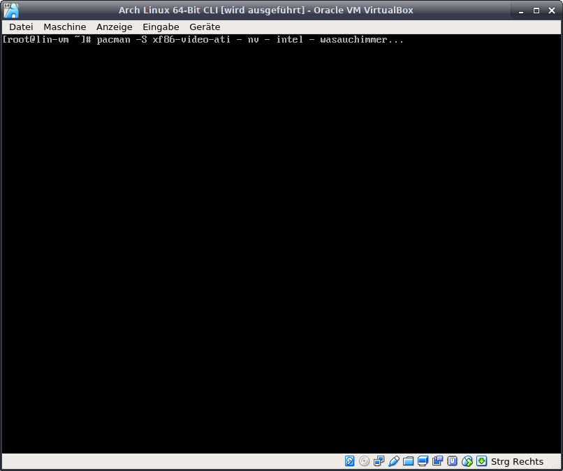
Die Grafikkartentreiber werden mit dem Befehl:
installiert.
Dies ist der Treiber für AMD/ATI Grafikkarten.
Sollte es sich um eine andere Grafikkarte handeln,
muss der Befehl entsprechend angepasst werden. Z.B.:
für NVIDIA Grafikkarten, oder:
für Grafikkarten der Firma Intel (in die CPU integrierte Grafikchips).
Desweiteren kann für Touchpads von Notebook noch der
Treiber installiert werden. Der Befehl:
ist für Touchpads der Firma Synaptics welche in ca. 90%
aller Notebooks verbaut sind.
Es kann auch passieren dass spezielle WLAN Treiber,
oder Treiber von anderen Geräten erforderlich sind,
aber in den meisten Fällen funktionieren die Sachen
ohne größere Anpassungen.
pacman -S xf86-video-ati
installiert.
Dies ist der Treiber für AMD/ATI Grafikkarten.
Sollte es sich um eine andere Grafikkarte handeln,
muss der Befehl entsprechend angepasst werden. Z.B.:
pacman -S xf86-video-nv
für NVIDIA Grafikkarten, oder:
pacman -S xf86-video-intel
für Grafikkarten der Firma Intel (in die CPU integrierte Grafikchips).
Desweiteren kann für Touchpads von Notebook noch der
Treiber installiert werden. Der Befehl:
pacman -S xf-input-synaptics
ist für Touchpads der Firma Synaptics welche in ca. 90%
aller Notebooks verbaut sind.
Es kann auch passieren dass spezielle WLAN Treiber,
oder Treiber von anderen Geräten erforderlich sind,
aber in den meisten Fällen funktionieren die Sachen
ohne größere Anpassungen.
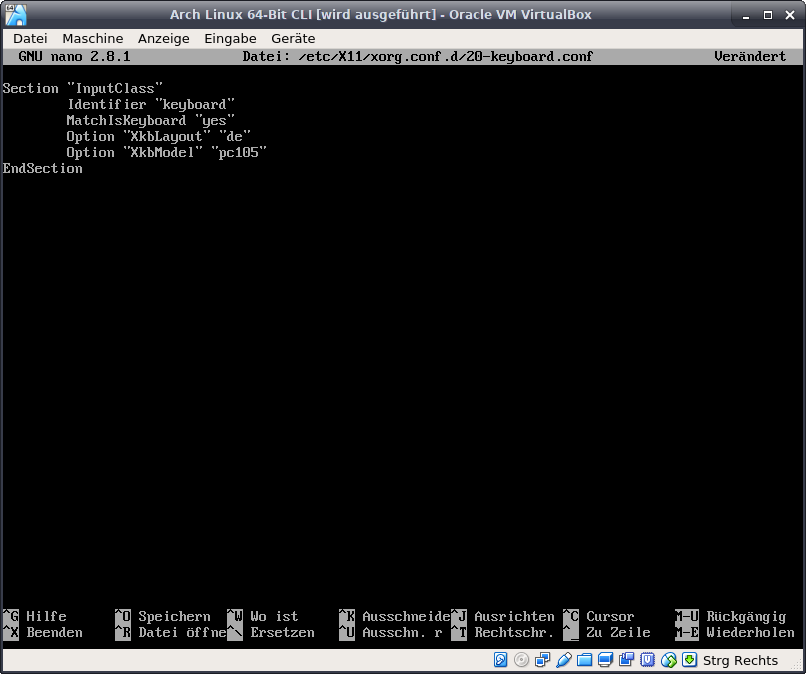
Anschließend noch die Spracheinstellungen der Tastatur für
die Graphische Benutzeroberfläche.
Dazu eine neue Datei erstellen und diese mit dem Text-
editor nano öffnen. Dies geht in einem Schritt:
Die folgenden Zeilen wie im Beispiel eingeben:
Section "InputClass"
Identifier "keyboard"
MatchIsKeyboard "yes"
Option "XkbLayout" "de"
Option "XkbModel" "pc105"
EndSection
Dies ist eine Konfiguration für eine deutsche Standart
Tastatur. Wenn eine spezielle Tastatur verwendet werden
soll muss diese Konfiguration entsprechend angepasst werden.
Gespeichert wird die Datei mit der Tastenkombination:
Und geschlossen wird der Texteditor mit:
Als nächstes nur noch die Soundmodule installieren.
die Graphische Benutzeroberfläche.
Dazu eine neue Datei erstellen und diese mit dem Text-
editor nano öffnen. Dies geht in einem Schritt:
nano /etc/X11/xorg.conf.d/20-keyboard.conf
Die folgenden Zeilen wie im Beispiel eingeben:
Section "InputClass"
Identifier "keyboard"
MatchIsKeyboard "yes"
Option "XkbLayout" "de"
Option "XkbModel" "pc105"
EndSection
Dies ist eine Konfiguration für eine deutsche Standart
Tastatur. Wenn eine spezielle Tastatur verwendet werden
soll muss diese Konfiguration entsprechend angepasst werden.
Gespeichert wird die Datei mit der Tastenkombination:
strg + o (evtl. mit Enter bestätigen)
Und geschlossen wird der Texteditor mit:
strg + x
Als nächstes nur noch die Soundmodule installieren.
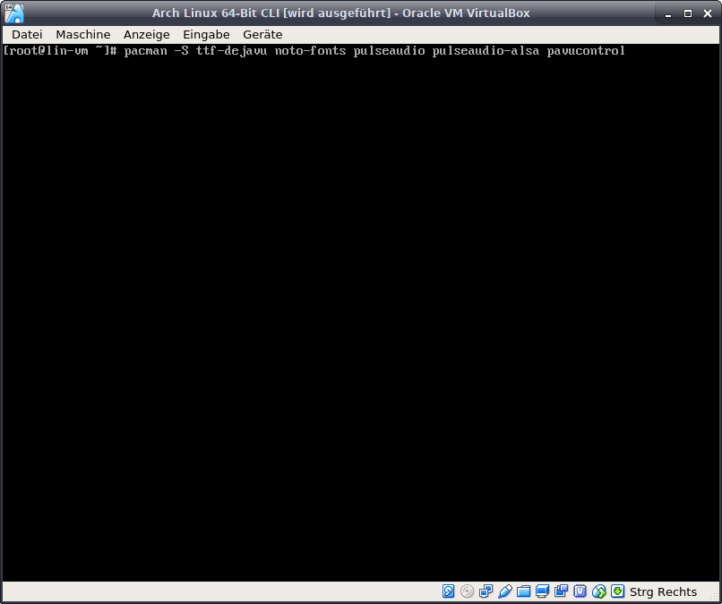
Die Soundmodule werden mit folgendem Befehl installiert:
pulseaudio = Soundserver
pulseaudio-alsa = Einse Schicht welche genutzt wird wenn ein
Programm mit pulse nicht zurecht kommt und nur alsa verwenden kann. Sozusagen ein Übersetzer.
pavucontrol = Ein Graphisches Menü für die Einstellungen.
Mit dem Befehl:
werden etwas schönere Schriftarten installiert als die Standart
Schriftarten. Es ist Geschmackssache welche verwendet werden.
Die zusätzlichen Schriften können auch in den ersten Installations-
Befehl geschrieben werden (wie im Beispiel zu sehen).
Damit wäre das komplette Betriebssystem installiert.
Es hat zwar noch keine Graphische Oberfläche, aber kann
voll und Ganz benutzt werden.
Mit etwas Übung ist das Betriebssystem (alle Schritte bis hier)
in ca. 10-15 Minuten installiert. Je nach dem wie schnell
man tippen kann und wie schnell die Internetleitung ist.
Auf nachfolgenden Seiten werde ich verschiedene
Desktopumgebungen vorstellen und evtl. Schritte von einer
Standartinstallation bis zur kompletten Einrichtung zeigen.
Natürlich ist auch die Einrichtung eher eine Geschmackssache.
Also stehts dem Motto treu bleiben:
pacman -S pulseaudio pulseaudio-alsa pavucontrol
pulseaudio = Soundserver
pulseaudio-alsa = Einse Schicht welche genutzt wird wenn ein
Programm mit pulse nicht zurecht kommt und nur alsa verwenden kann. Sozusagen ein Übersetzer.
pavucontrol = Ein Graphisches Menü für die Einstellungen.
Mit dem Befehl:
pacman -S ttf-dejavu ttf-liberation noto-fonts
werden etwas schönere Schriftarten installiert als die Standart
Schriftarten. Es ist Geschmackssache welche verwendet werden.
Die zusätzlichen Schriften können auch in den ersten Installations-
Befehl geschrieben werden (wie im Beispiel zu sehen).
Damit wäre das komplette Betriebssystem installiert.
Es hat zwar noch keine Graphische Oberfläche, aber kann
voll und Ganz benutzt werden.
Mit etwas Übung ist das Betriebssystem (alle Schritte bis hier)
in ca. 10-15 Minuten installiert. Je nach dem wie schnell
man tippen kann und wie schnell die Internetleitung ist.
Auf nachfolgenden Seiten werde ich verschiedene
Desktopumgebungen vorstellen und evtl. Schritte von einer
Standartinstallation bis zur kompletten Einrichtung zeigen.
Natürlich ist auch die Einrichtung eher eine Geschmackssache.
Also stehts dem Motto treu bleiben:
Wenn dir etwas nicht gefällt, ändere es einfach!